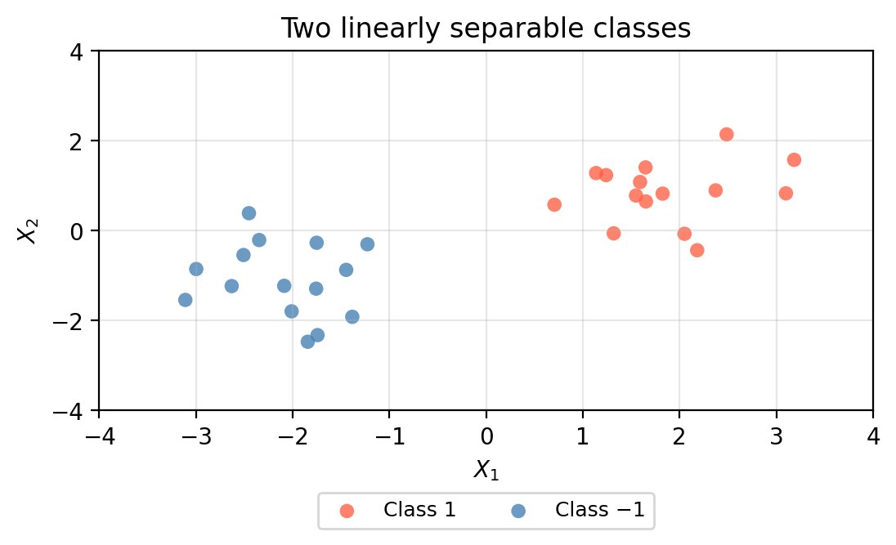
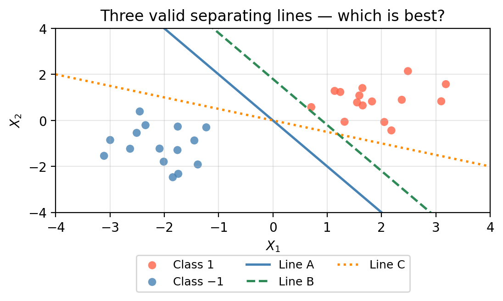
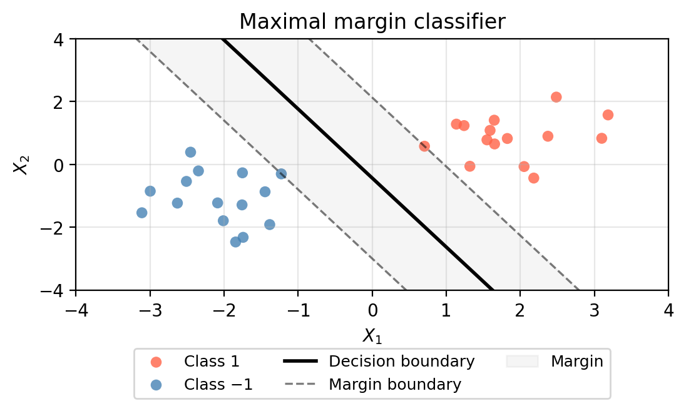
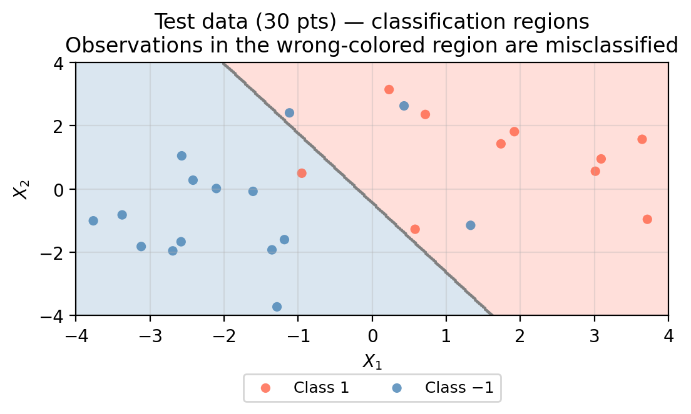
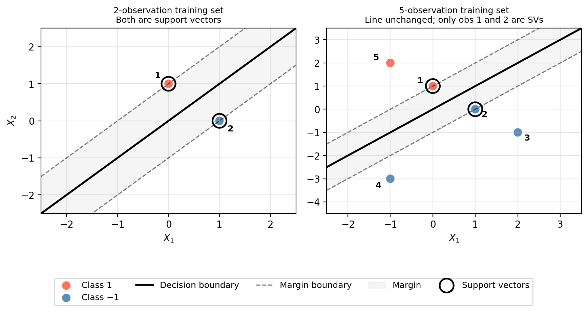
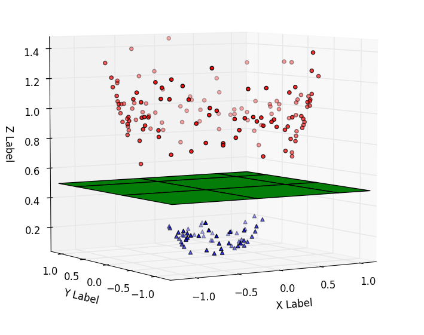
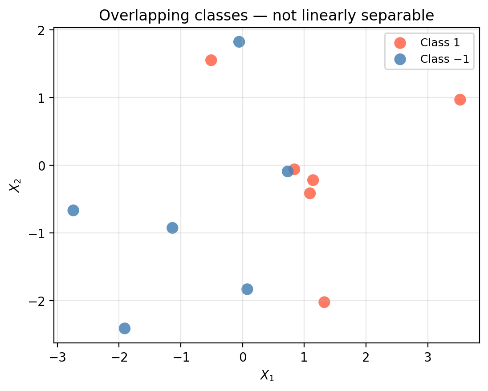
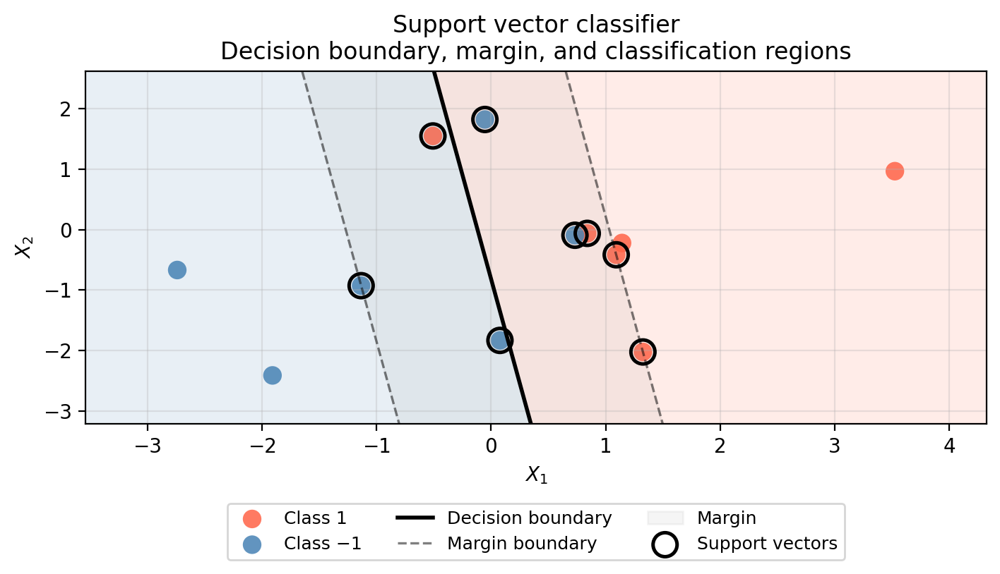
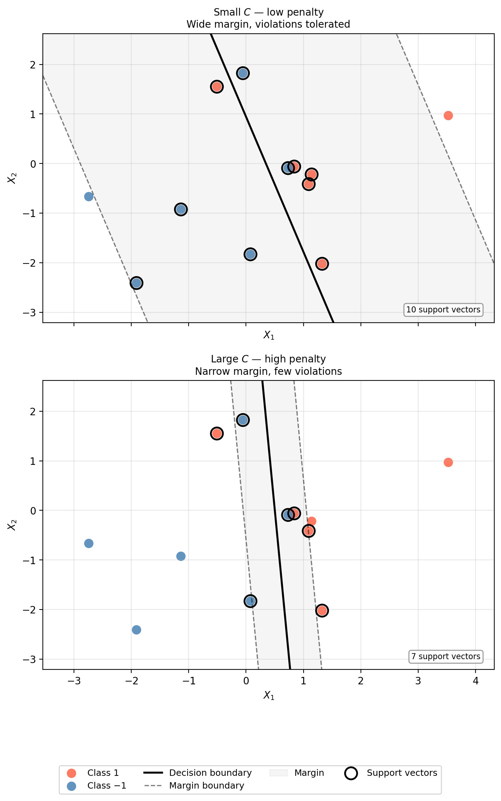

Support vector classifier
In this lesson we introduce:
- Separating hyperplanes as linear decision boundaries for binary classification
- The maximal margin classifier and the concept of the margin
- Support vectors and why they uniquely determine the classifier
- The support vector classifier as a soft-margin generalization
- The budget parameter \(C\) and the resulting bias–variance tradeoff
These notes are based on chapter 9 of An Introduction to Statistical Learning with Applications in Python (James et al. 2023). All example data is synthetic and was generated with the aid of Claude Code for the purpose of this lesson.
Maximal margin classifier
We begin in a binary classification setting where the two classes can be perfectly separated by a linear boundary.
Separating lines
Consider a dataset with two predictors \(X_1\) and \(X_2\) and a binary response with classes \(+1\) and \(-1\).
Assume for now that we can perfectly separate the two classes with a line in the \((X_1, X_2)\) plane. Any such line is called a separating line. Whenever the classes are perfectly separable, there are infinitely many valid separating lines. The plot below shows three examples, all of which place every Class 1 observation on one side of the line and every Class −1 observation on the other.

The challenge is then: How do we select the “best” separating line among all infinitely many options?
The margin
The maximal margin classifier answers this question: among all separating lines, it selects the separating line that is furthest away from the training observations.
We measure the distance from a separating line to the data using the margin: the smallest perpendicular distance from the separating line to any training observation.

The maximal margin classifier selects the line that maximizes the margin. This line is found by solving the optimization problem covered in the ISLP book section 9.1.4.

Intuitively, a wider margin signals greater confidence in the classification since it means the space between the classes is as wide as can be.
Once we have established our maximal margin line as our classification boundary, we obtain two classification regions:
- every new observation that falls on one side of the line will be in one of the classes,
- and every observation to the other side of the line will belong to the other class.
Observations far from the margin and are classified with high certainty, while observations close to the boundary are more ambiguous.

Support vectors
The margin is determined only by the training observations that lie exactly on the margin boundary (the dashed lines in the plot above). These observations are called support vectors.

The maximal margin classifier depends only on the support vectors, and not on any other training observation. Moving a non-support-vector point, even by a large amount, has no effect on the classifier, as long as it stays on the same side of the margin.
TipCheck-in
We have a training set consisting of two observations:
| Observation | \(X_1\) | \(X_2\) | Class |
|---|---|---|---|
| 1 | 0 | 1 | +1 |
| 2 | 1 | 0 | -1 |
- Draw a diagram identifying the training set, the maximal margin line, and the support vectors.
- Now suppose our training set is the following. How would the maximal margin line change? What are the support vectors?
| Observation | \(X_1\) | \(X_2\) | Class |
|---|---|---|---|
| 1 | 0 | 1 | +1 |
| 2 | 1 | 0 | -1 |
| 3 | 2 | -1 | -1 |
| 4 | -1 | -3 | -1 |
| 5 | -1 | 2 | +1 |
- Find the equation of the maximal margin line for this dataset.
A point \((x_1,x_2)\) will be on the line you found if and only if \(x_1 - x_2 = 0\).
Will \(x_1 - x_2\) be positive or negative for a point in the region above the maximal margin line? What about for a point below the maximal margin line?
How would you describe the relationship between the sign of \(x_1 - x_2\) and the classification regions?
TipDiscussion
Q1.

Q2 The maximal margin line does not change. The key insight is that the maximal margin classifier depends only on the support vectors; observations that lie farther from the boundary are irrelevant to defining it.
Q3 \(x_1 - x_2 = 0\).
Q4 For a point above the line
\[ x_1 < x_2 \Rightarrow x_1 - x_2 <0. \]
For a point below the line
\[ x_1 > x_2 \Rightarrow x_1 - x_2 > 0. \]
Check: obs 1 gives \(0 - 1 = -1 < 0\) (above); obs 2 gives \(1 - 0 = 1 > 0\) (below).
Q5 The sign of \(x_1 - x_2\) determines the predicted class:
- \(x_1 - x_2 < 0\) \(\Rightarrow\) Class \(+1\) (above the line).
- \(x_1 - x_2 > 0\) \(\Rightarrow\) Class \(-1\) (below the line).
In general, the support vector classifier assigns class to a new point \((x_1^*, x_2^*)\) based on the sign of \(\beta_0 + \beta_1 x_1^* + \beta_2 x_2^*\), where
\[ $\beta_0 + \beta_1 x_1^* + \beta_2 x_2^*\] is the equation of the maximal margin line.
In our example \(\beta_0 = 0\), \(\beta_1 = 1\), \(\beta_2 = -1\).
Zooming out
In the case of two linearly separable classes, the maximal margin classifier finds the line that leaves the widest margin between the classes. This maximal margin line can be defined by all points \((x_1, x_2)\) for which \[\beta_0 + \beta_1x_1 + \beta_2x_2 = 0.\]
We get the coefficients \(\beta_0, \beta_1, \beta_2\) from solving the maximal margin optimization problem. For example, in our check-in, our line had the coefficients \(\beta_0=0\), \(\beta_1=1\) and \(\beta_2 = -1\).
The region on one side of the line is made of all the points \((x_1, x_2)\) for which
\[\beta_0 + \beta_1x_1 + \beta_2x_2 > 0,\]
and the region on the other side of the line consists of all the points \((x_1, x_2)\) for which
\[\beta_0 + \beta_1x_1 + \beta_2x_2 <0.\]
Each of these sides corresponds to a classification region.
So, the maximal margin classifier classifies a new observation \(x^* = (x_1^*, x_2^*)\) by checking whether \(\beta_0 + \beta_1x_1^* + \beta_2x_2^*\) is positive or negative, and assigning the corresponding class.
The magnitude
\[|\beta_0 + \beta_1 x_1^* + \beta_2 x_2^*|\]
reflects how far the new point is from the boundary: larger values indicate greater distance and thus greater classification confidence.
Higher dimensions: hyperplanes
What happens when we have observations with more than 2 predictors? In other words, what happens when our data has more than 2 dimensions?
In three dimensions, we can still visualize how two classes can be separated by a flat plane as in the figure below.

In \(p\) dimensions, the separating boundary is no longer a line or a plane, but a hyperplane: a \((p-1)\)-dimensional flat subspace.
- In \(p = 2\) dimensions, a hyperplane is a line.
- In \(p = 3\) dimensions, a hyperplane is a plane.
- For \(p > 3\), we cannot visualize it! So we describe it algebraically:
the hyperplane consists of all points \((x_1, \ldots, x_p)\) for which \[\beta_0 + \beta_1 X_1 + \beta_2 X_2 + \cdots + \beta_p X_p = 0,\]
The coefficients \(\beta_0, \beta_1, \ldots, \beta_p\) define the hyperplane. Just as in two dimensions, we find the maximal margin hyperplane by solving the same optimization problem, and it still depends only on the support vectors.
This hyperplane divides the space into two half-spaces. For a new point \((x_1, \ldots, x_p)\), the sign of \(\beta_0 + \beta_1 x_1 + \cdots + \beta_p x_p\) determines which side a point falls on — and therefore which class it is assigned to:
- = 0: the point is on the hyperplane,
- < 0: the point is on one side → assigned to one class,
- > 0: the point is on the other side → assigned to the other class.
Support vector classifier
The maximal margin classifier has a serious limitation: it requires the classes to be perfectly linearly separable. In practice this is rarely satisfied, like the data shown below.

The support vector classifier (also called the soft-margin classifier) relaxes perfect separability. It allows some observations to become “violations to the margin” by being:
- within the margin (on the correct side of the hyperplane but inside the margin), or
- on the wrong side of the hyperplane (misclassified).

Fitting the support vector classifier involves solving an optimization problem (ISLP section 9.2.2) to find coefficients \(\beta_0, \ldots, \beta_p\) to define the hyperplane \(\beta_0 + \beta_1 X_1 + \beta_2 X_2 + \cdots + \beta_p X_p = 0\) that we will use as the decision boundary.
As before, observations that lie on the margin boundary or on the wrong side of the margin are the support vectors and are the only observations that affect the fitted classifier.
The hyperparameter C
The support vector classifier is controlled by a hyperparameter \(C > 0\) that sets the penalty for each margin violation. This is the C parameter you will set directly in scikit-learn’s SVC.
- Large \(C\): each violation is heavily penalized, so the classifier tries hard to keep observations on the correct side of the margin. This produces a narrow margin with fewer support vectors and a boundary that fits the training data tightly.
- Small \(C\): violations are tolerated more easily, so the classifier is willing to misclassify some training observations in exchange for a wider margin with more support vectors and a smoother, more stable boundary.
In practice, \(C\) is selected using cross-validation.
Note
The ISLP book defines \(C\) as a budget for violations — a larger budget means more violations are allowed. This is the inverse of the sklearn convention: a large ISLP budget corresponds to a small sklearn C, and vice versa. When reading the book alongside sklearn code, keep this in mind.
The two plots below show the same overlapping dataset fitted with a small \(C\) (wide margin, many violations tolerated) and a large \(C\) (narrow margin, violations heavily penalized).

Changing \(C\) creates a classic bias–variance tradeoff:
| Small \(C\) | Large \(C\) | |
|---|---|---|
| Penalty for violations | Low | High |
| Margin width | Wide | Narrow |
| Number of support vectors | More | Fewer |
| Bias | Higher | Lower |
| Variance | Lower | Higher |
TipCheck-in
Explain why a small margin corresponds to higher bias and lower viarance, and why a large margin corresponds to lower bias and higher variance.
Suppose you train with a very large \(C\) and find that the model performs well on the training set but poorly on a held-out test set. What does this suggest, and how would you adjust \(C\)?
TipDiscussion
- A small \(C\) tolerates violations, producing a wide margin and a boundary that is less sensitive to individual training points (lower variance) but may misclassify more observations (higher bias).
- A large \(C\) penalizes violations heavily, producing a narrow margin that fits the training data tightly (lower bias) but is sensitive to small changes in the training set and may overfit (higher variance).
- Good training performance with poor test performance is a classic sign of overfitting — the large \(C\) is penalizing violations so heavily that the boundary memorizes the training data. Decreasing \(C\) would widen the margin, reduce variance, and likely improve generalization.
References
James, Gareth, Daniela Witten, Trevor Hastie, Robert Tibshirani, and Jonathan E. Taylor. 2023. An Introduction to Statistical Learning: With Applications in Python. Springer Texts in Statistics. Cham: Springer.